E maj • PDF
E maj • PDF Ashe
Solo Piano • 4 pp • 136 BPM
Dua Lipa
Solo Piano • 4 pp • 123 BPM

F maj • PDF Duncan Laurence
Solo Piano • 4 pp • 112 BPM
MAYDAYs ft. Minh Tốc
Solo Piano • 4 pp • 72 BPM
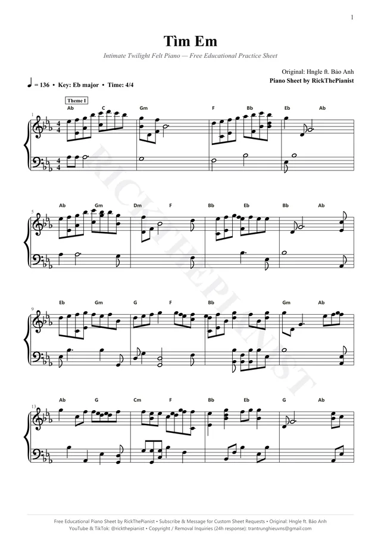
Eb maj • PDF Hngle ft. Bảo Anh
Solo Piano • 4 pp • 136 BPM

D maj • PDF Ngô Thụy Miên
Solo Piano • 4 pp • 93 BPM
Jamie Miller
Solo Piano • 4 pp • 117 BPM
 C maj • PDF
C maj • PDF Sia
Solo Piano • 4 pp • 103 BPM
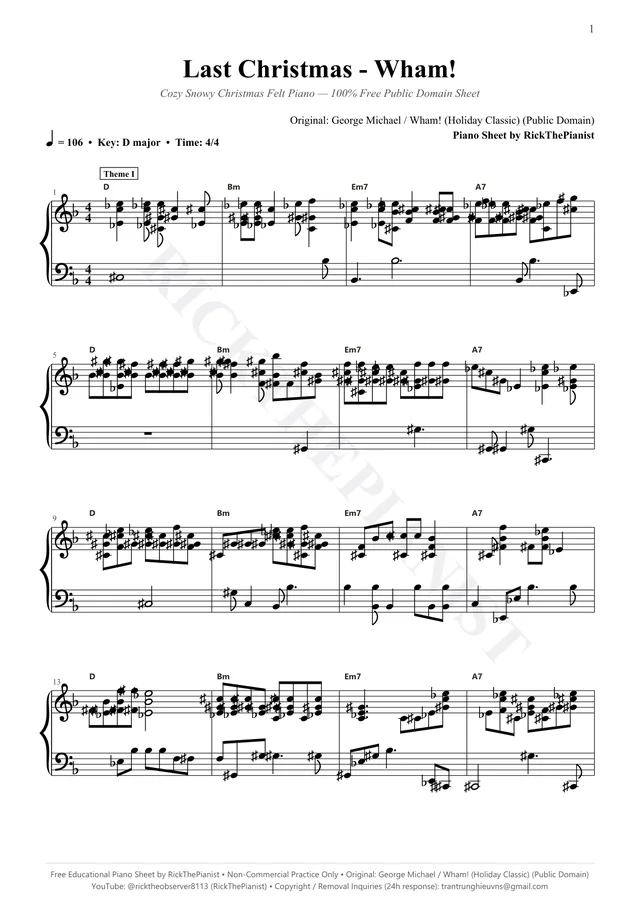
Felt Piano • PDF George Michael / Wham!
Solo Piano • 4 pp • Free PDF

E min • PDF Hans Zimmer
Solo Piano • 4 pp • 99 BPM
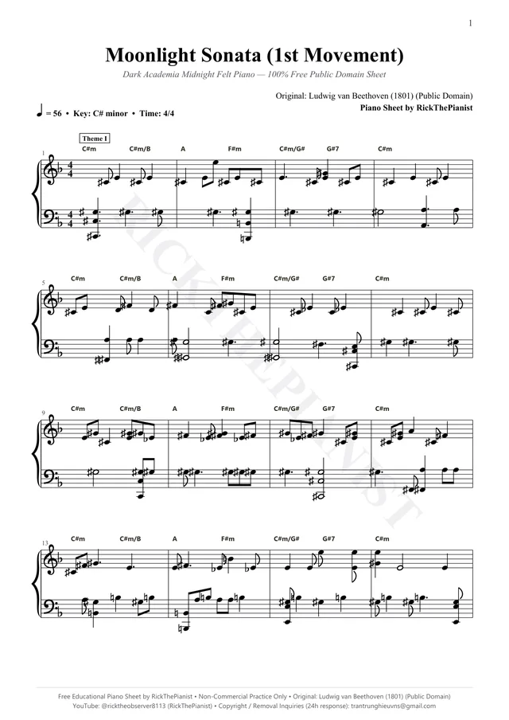
Felt Piano • PDF Ludwig van Beethoven (1801)
Solo Piano • 4 pp • Free PDF

Felt Piano • PDF Mariah Carey
Solo Piano • 4 pp • Free PDF
ROSÉ & Bruno Mars
Solo Piano • 4 pp • 149 BPM
 Felt Piano • PDF
Felt Piano • PDF Pyotr Ilyich Tchaikovsky (1892)
Solo Piano • 4 pp • Free PDF

Felt Piano • PDF Lady Gaga & Bruno Mars
Solo Piano • 4 pp • Free PDF
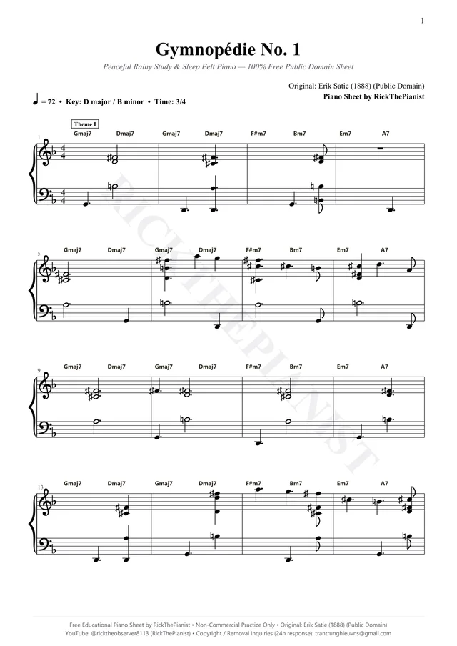
Felt Piano • PDF Erik Satie (1888)
Solo Piano • 4 pp • Free PDF
 Felt Piano • PDF
Felt Piano • PDF ABBA
Solo Piano • 4 pp • Free PDF
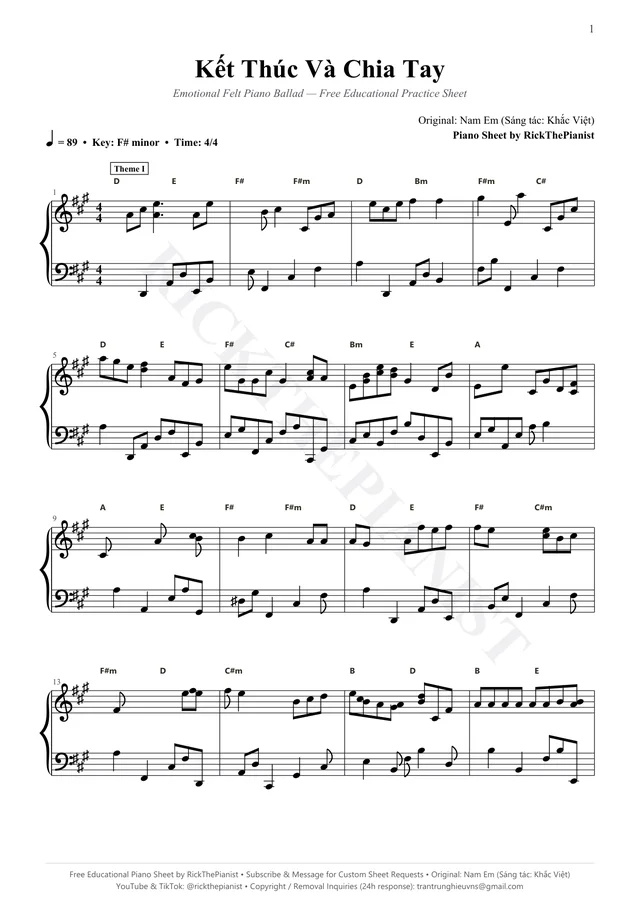
F# min • PDF Nam Em (Pure Felt Ballad)
Solo Piano • 4 pp • 89 BPM
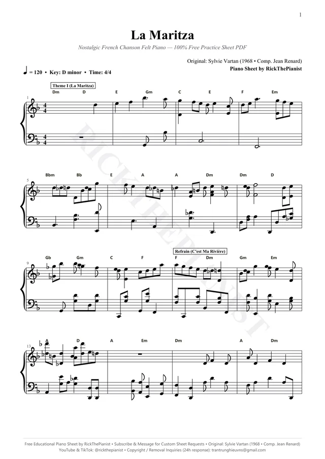
Felt Piano • PDF Sylvie Vartan (Pure Felt Piano)
Solo Piano • 4 pp • Free PDF
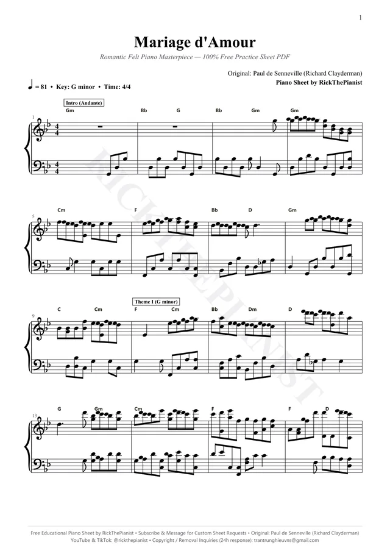
Felt Piano • PDF Paul de Senneville (Pure Felt Piano)
Solo Piano • 4 pp • Free PDF
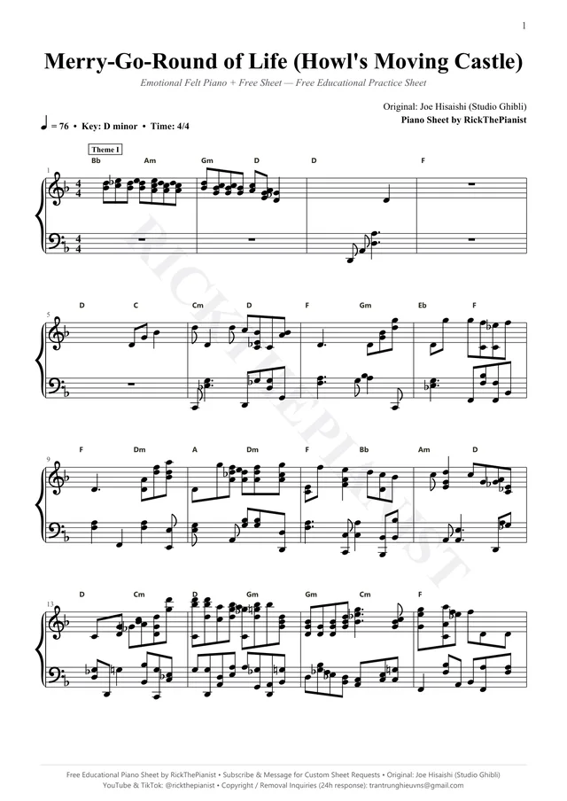
D min • PDF Joe Hisaishi
Solo Piano • 4 pp • 76 BPM
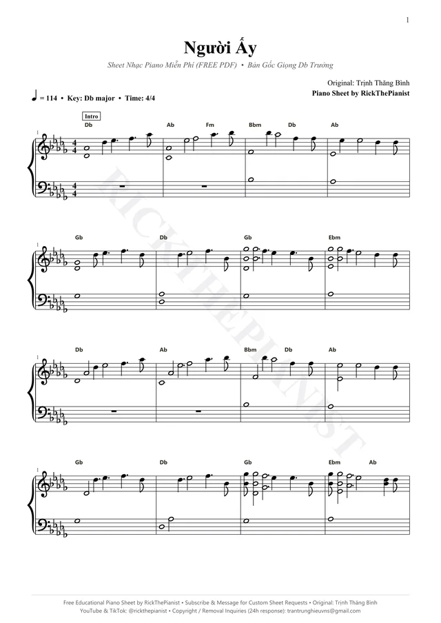
Db maj • PDF Trịnh Thăng Bình
Solo Piano • 4 pp • 114 BPM
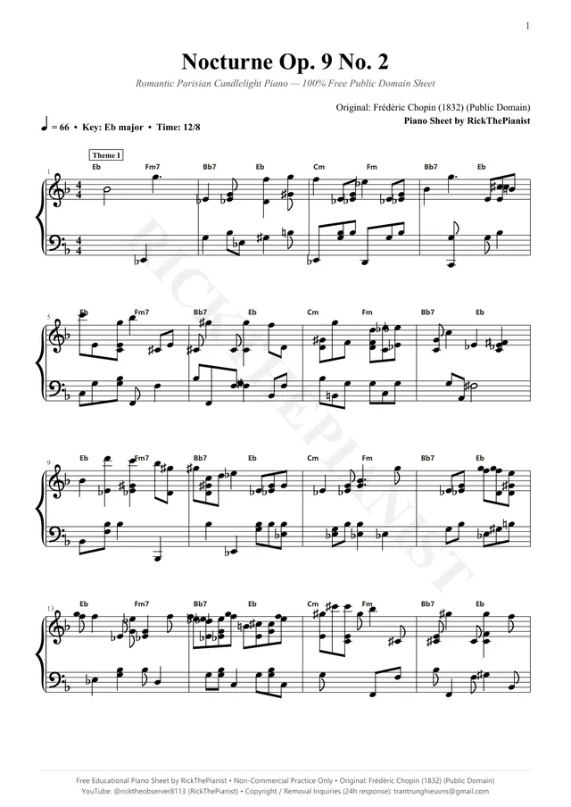
Felt Piano • PDF Frédéric Chopin (1832)
Solo Piano • 4 pp • Free PDF
 Felt Piano • PDF
Felt Piano • PDF Adolphe Adam
Solo Piano • 4 pp • Free PDF

A min • PDF Handel / Halvorsen
Solo Piano • 4 pp • 123 BPM

Felt Piano • PDF Johann Sebastian Bach
Solo Piano • 4 pp • Free PDF

A maj • PDF Quang Hùng MasterD, Cody Nam Võ, CONGB, Wren Evans
Solo Piano • 4 pp • 128 BPM

Felt Piano • PDF người điên NẶNG (Pure Felt Piano)
Solo Piano • 4 pp • Free PDF

Felt Piano • PDF Antonio Vivaldi (1725)
Solo Piano • 4 pp • Free PDF
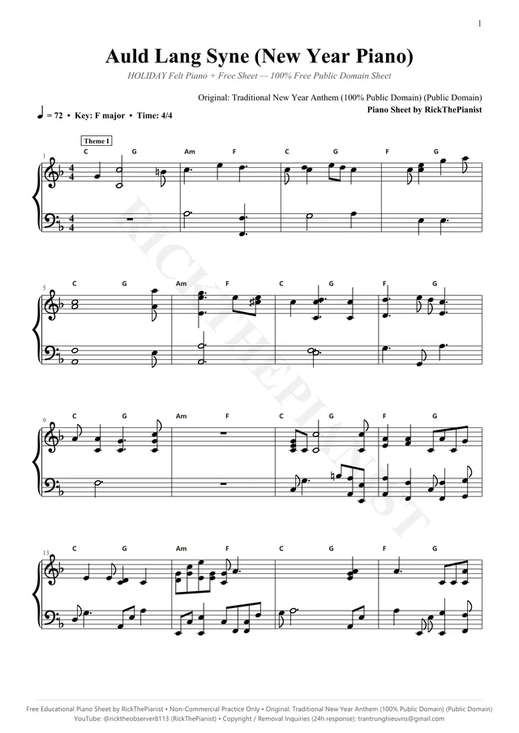
Felt Piano • PDF Robert Burns / Traditional
Solo Piano • 4 pp • Free PDF

Felt Piano • PDF sombr
Solo Piano • 4 pp • Free PDF

D maj • PDF Billie Eilish
Solo Piano • 4 pp • 103 BPM

Felt Piano • PDF Tùng Dương
Solo Piano • 4 pp • Free PDF
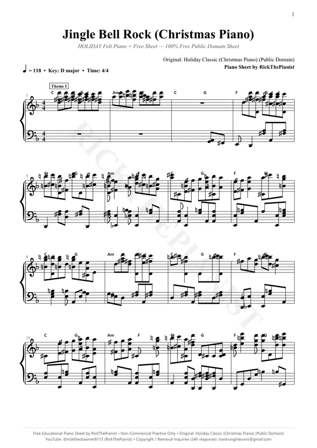
Felt Piano • PDF Bobby Helms
Solo Piano • 4 pp • Free PDF
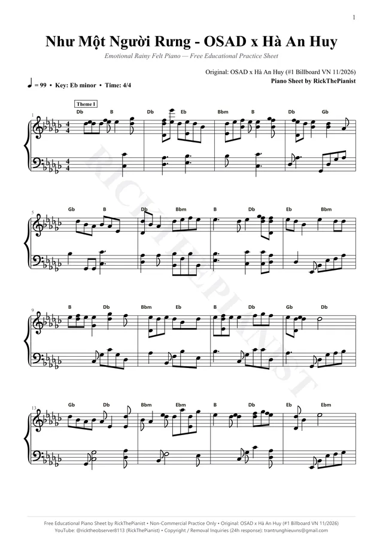
Eb min • PDF OSAD x Hà An Huy
Solo Piano • 4 pp • 99 BPM
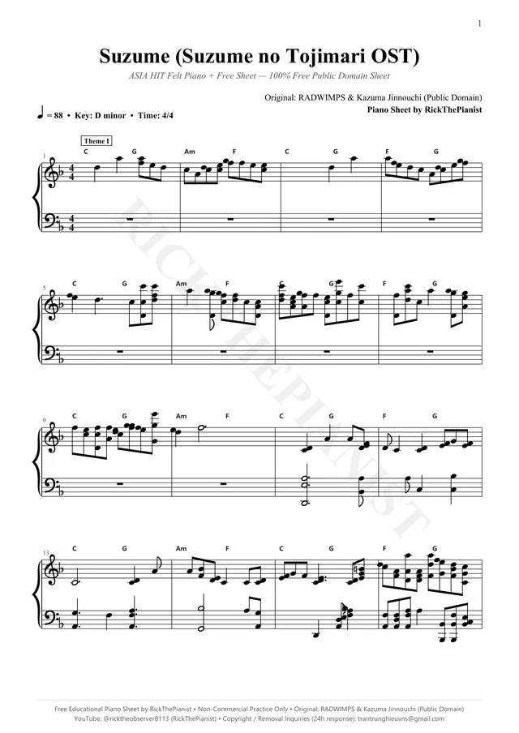
Felt Piano • PDF RADWIMPS
Solo Piano • 4 pp • Free PDF
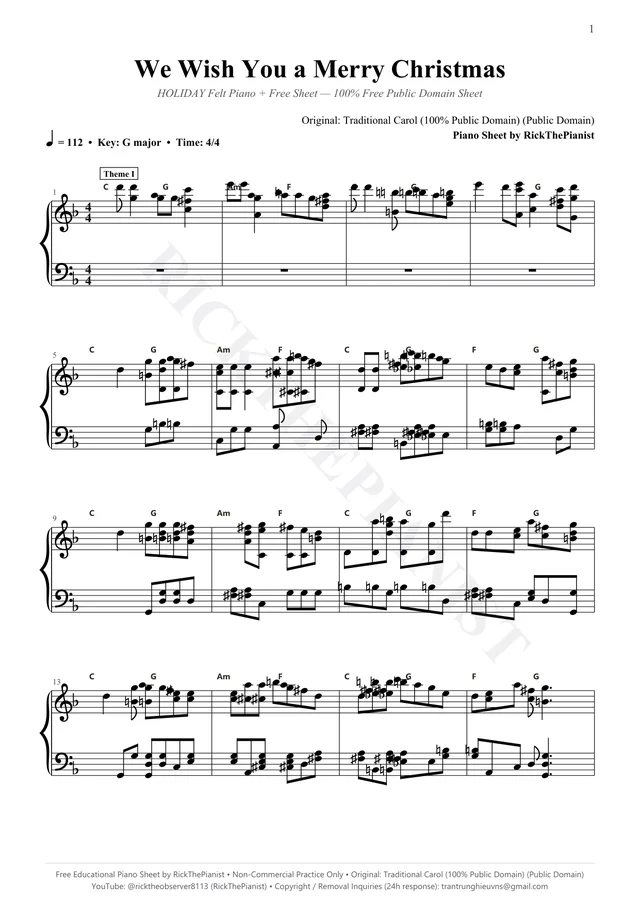
Felt Piano • PDF Traditional Holiday Carol
Solo Piano • 4 pp • Free PDF
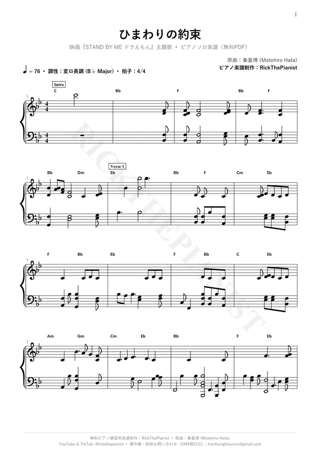
Bb maj • PDF 秦基博 (Motohiro Hata)
Solo Piano • 4 pp • 76 BPM